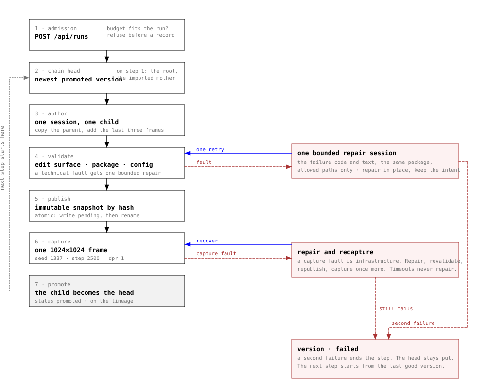
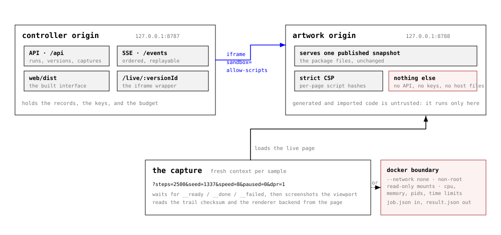
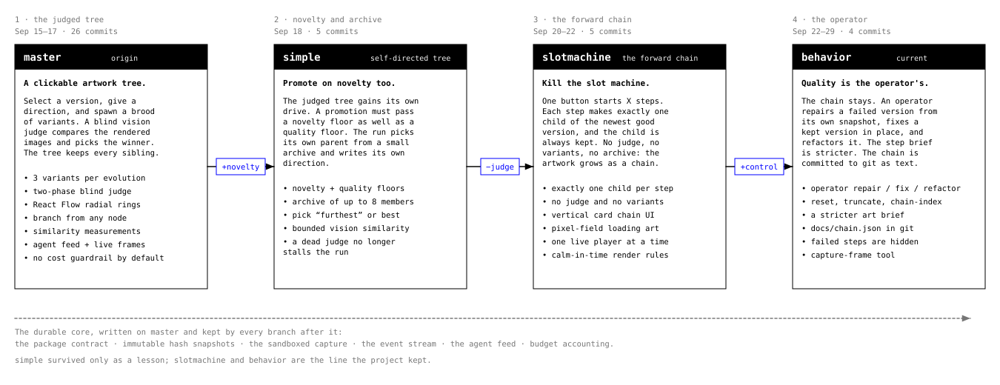
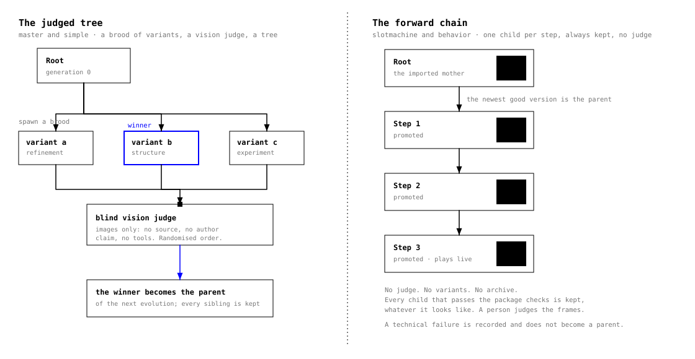
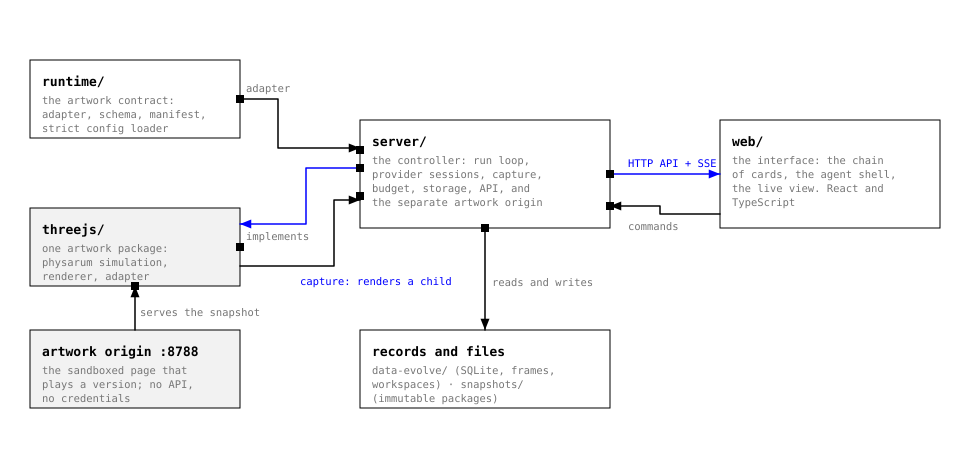
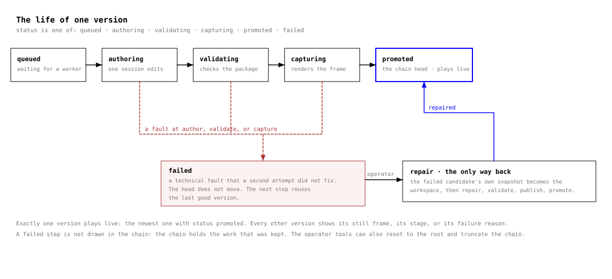
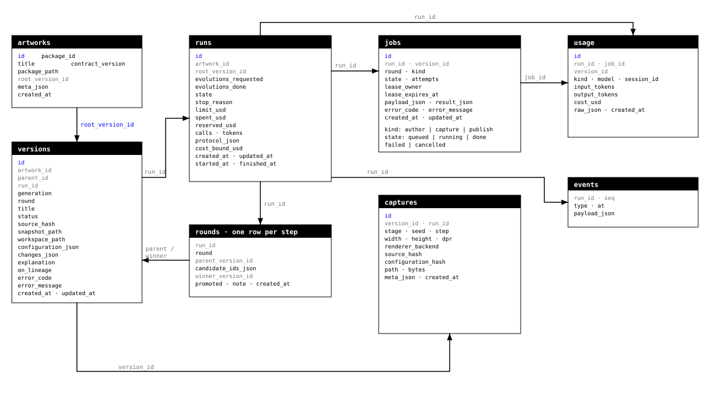
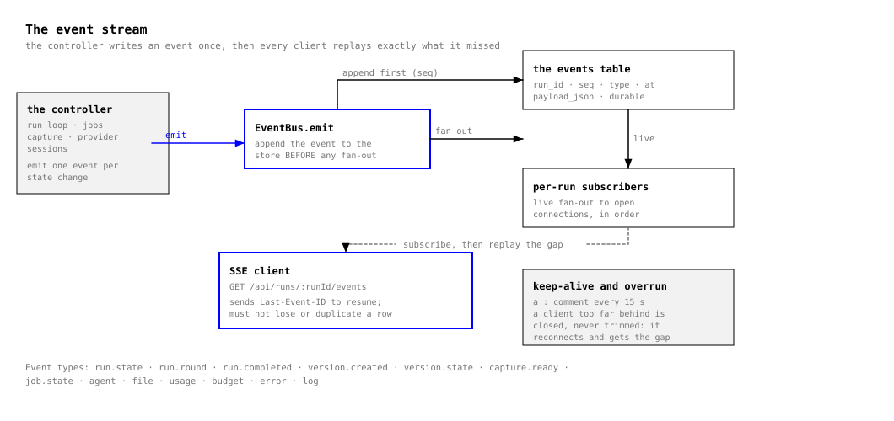
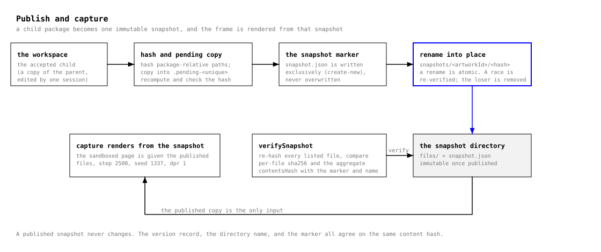

phygen — a plain guide
phygen grows a moving artwork with the help of an AI assistant. At each step, the assistant changes the artwork code a little. The program saves the result as a new version and makes one picture of it. The program keeps the whole history.
This guide explains the idea in simple words. It shows the structure diagrams and the screenshots. It does not give the technical detail. For the full detail, read the full documentation.
1 · The idea
phygen is a program that grows a computer artwork over time. The artwork is a moving pattern. Many small parts move together and leave trails, like cells. The picture changes every second.
An AI assistant writes the artwork code. The program runs the code and makes one picture of the result. If the picture is acceptable, the program keeps the new version. Then it starts again from the newest version.
The program also writes a record of every step. The record holds the code, the picture, the cost, and the notes from the assistant. Nothing is lost. You can see how the artwork grew, step by step.
2 · How one step works
Each step has the same simple shape:
- The program reads the newest good version.
- The assistant changes a copy of the code.
- The program checks the change.
- The program makes one picture of the new version.
- The program keeps the new version and shows it on the screen.
A step can fail. If a step fails, the program keeps the last good version. The artwork does not break. A person can repair the failed version later.

The safe place
The artwork code is new, and the program does not trust it. So the code runs in its own safe place, away from the records and the keys. The program takes the picture from that safe place. If the code behaves badly, the rest of the program stays safe.

3 · Four designs of the idea
The project tried four designs, one after the other. Each design kept what worked and changed the rest. The four designs are stages of one idea, not four choices.
master the judged tree
The program made three variants at once. A second AI looked at the pictures and chose one winner. Every variant stayed in the tree. A person gave the direction.
simple novelty and archive
The tree ran itself. The program chose its own parent and wrote its own direction. A new version had to be good, and it also had to be different from the older ones.
slotmachine the forward chain
The program made one child each step. It kept every child. There was no judge. The artwork grew as one chain, and the screen became a column of cards.
behavior the operator
The chain stayed. A person can now repair a failed version, fix a kept version, or reset the chain. This is the current design.


The project moved from the tree to the chain, and it did not go back. The reason is simple. Many variants cost more, and a person often did not prefer the winner. One child at a time gives a clear history and a lower cost.
4 · The parts of the system
phygen has four main parts:
- The rules: what an artwork must have and how it must behave.
- The artwork: the code that draws the moving pattern.
- The controller: the program that runs the steps and keeps the records.
- The screen: the page that shows the chain and the pictures.

More structure diagrams
The next diagrams show more of the structure. Each one has a short note.




5 · Screenshots
These images show the screen. Some come from the older tree design, and some from the newer chain design. Click an image to open it larger.
%20.png)


%20-%20phygen%20-%20Visual%20Studio%20Code.png)
6 · Captures of the running artworks
These are pictures of the artworks themselves, not the screen. Each design kept its own history, so the twelve images below come from that design's own data. They are ordered from the first to the last, so each row shows how the design changed. Every picture shows the same moving pattern; the designs differ only in how a new version is chosen.
The older designs make 768×768 pictures. The newer designs make 1024×1024 pictures. Every picture uses the same starting value, so two designs are easy to compare.
master
The judged tree. Twelve of 73 versions, chosen to show variety, oldest first. Click one to open it larger.


simple
The judged tree with novelty floors. Twelve of 55 versions, chosen to show variety. Click one to open it larger.


slotmachine
The forward chain. Twelve of 157 versions, chosen to show variety, in chain order. Click one to open it larger.


behavior
The operator era. Twelve of 52 versions, chosen to show variety, in chain order. Click one to open it larger.


7 · Words you will see
| Word | Meaning |
|---|---|
| AI assistant | A computer program that writes and changes code from a written request. |
| artwork | One picture program that grows. The example is a moving pattern of trails. |
| version | One saved state of the artwork: its code, its picture, and its notes. |
| step | One turn of work. One step makes one new version. |
| chain | The line of kept versions, from the first to the newest. |
| tree | An older shape. One version could have several children at once. |
| capture | One picture of one version. |
| promote | To keep a new version and make it the newest one. |
| snapshot | A copy that never changes. |
| judge | An AI that looks at the pictures and chooses one. Only the old designs used a judge. |
| operator | The person who can repair or change a version. |